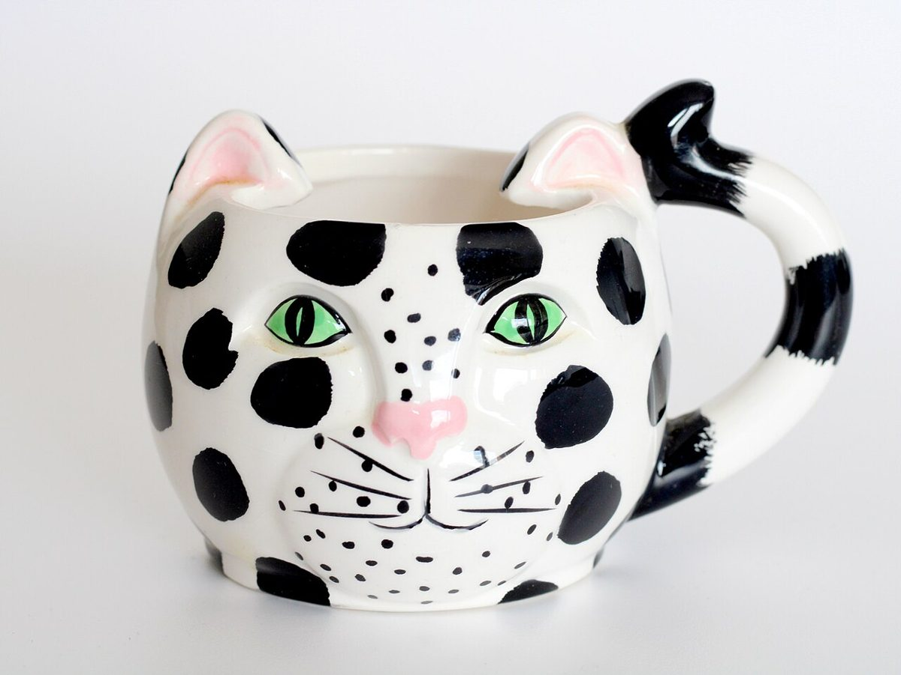
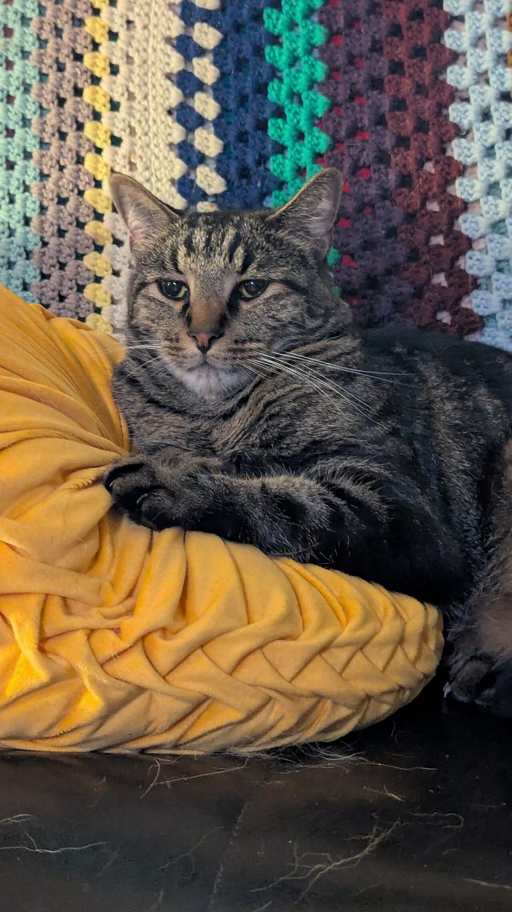
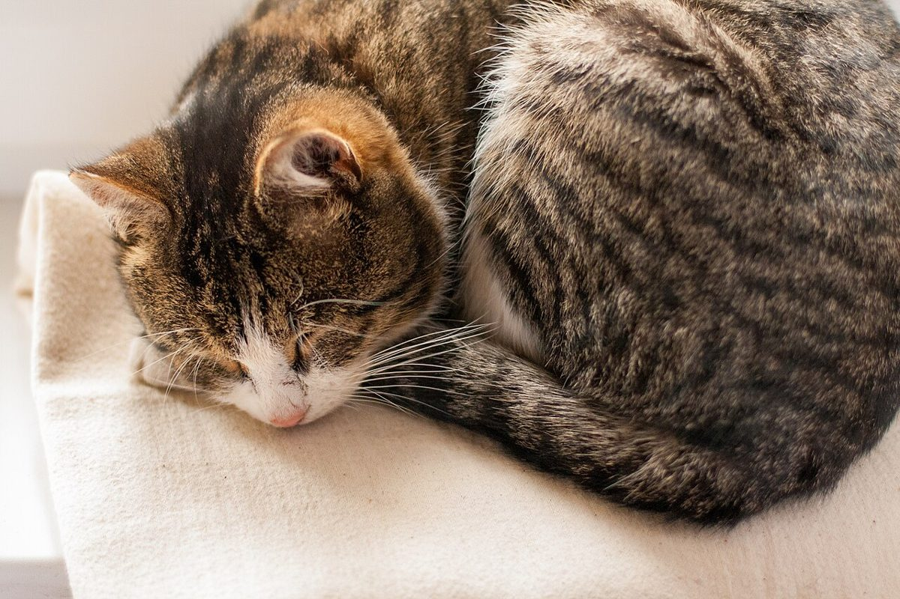
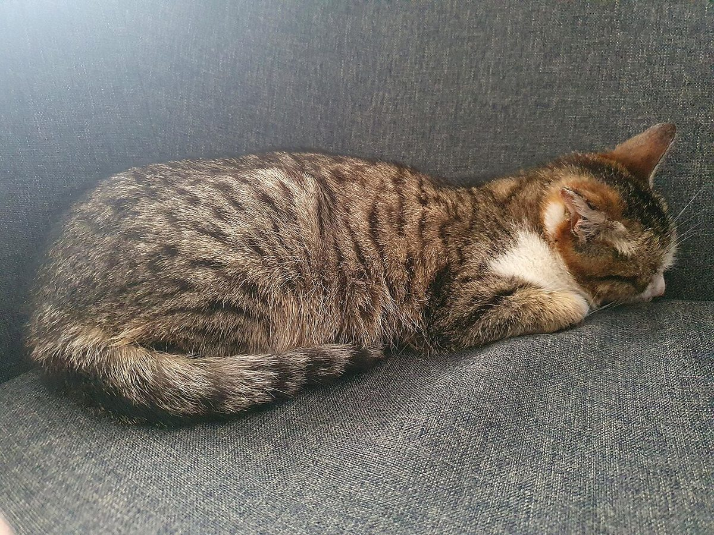
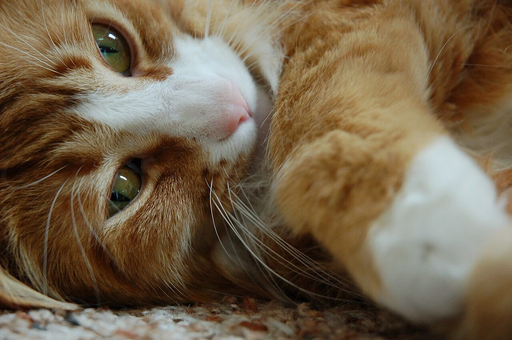
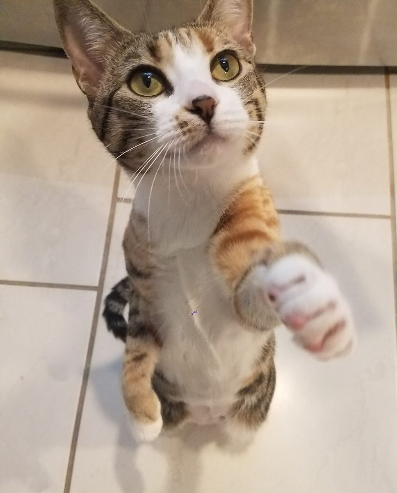
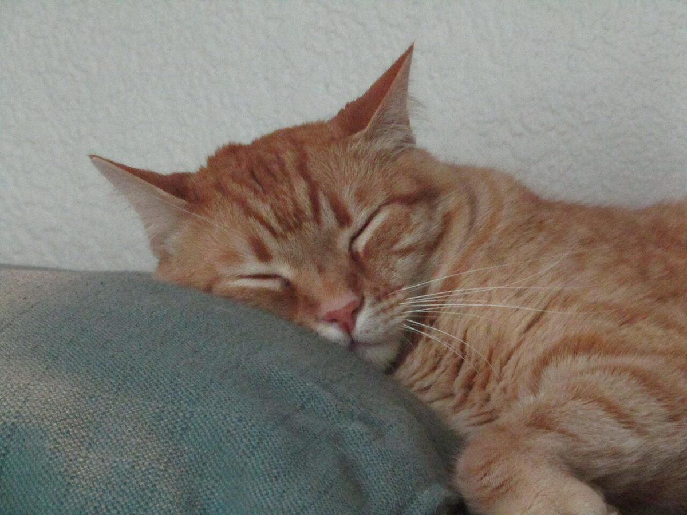
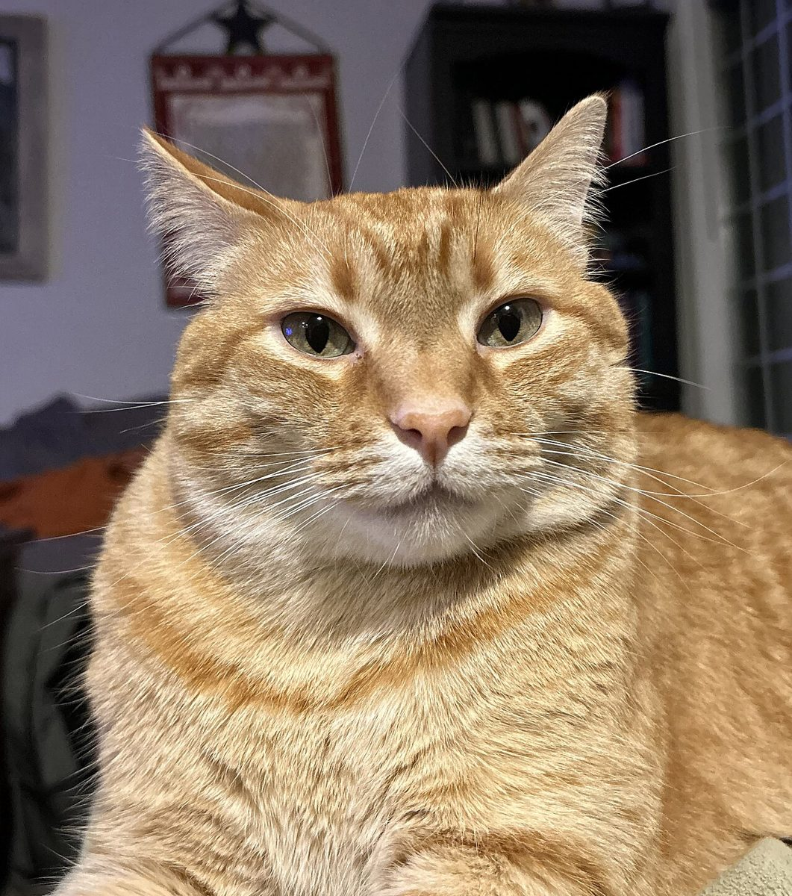
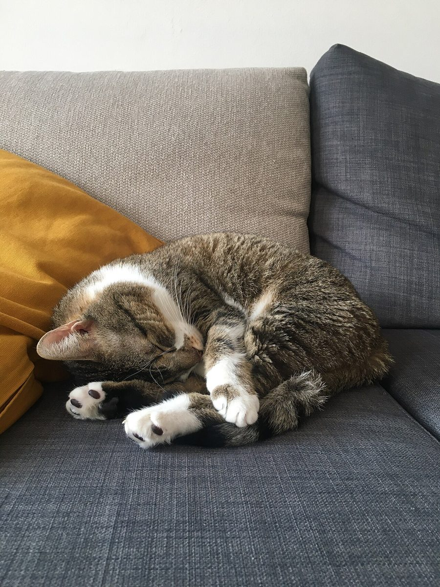

MENU
メニュー
Instagramのプロフィールでは、コーヒーと猫モチーフのスイーツの提供、猫グッズの販売が紹介されています。品目・価格などの詳細は確認できていないため準備中です。
コーヒー種類・価格: 準備中
猫モチーフのスイーツ品目・価格: 準備中
猫グッズ取り扱い内容: 準備中











写真はフリー素材のイメージです。実際の店内・商品・保護猫の写真ではありません。
VOICE
口コミ(イメージ例)
以下は制作側が創作したイメージ例です。実在のお客様の声ではありません。
イメージ例
温泉街を歩いた帰りに立ち寄りました。コーヒーを飲みながら、のんびりした時間を過ごせました。
イメージ例
猫の形のスイーツがかわいくて、写真を撮ってしまいました。猫グッズも見られて楽しかったです。
イメージ例
保護猫の支援につながると知って、また来ようと思いました。小さなお店であたたかい雰囲気でした。
ABOUT
お店のこと
でずぼCafeは、山形県のあつみ温泉街にある小さなカフェです。Instagramのプロフィールによると、保護猫の支援と、保護猫の譲渡を行っています。コーヒーと猫モチーフのスイーツを提供し、猫グッズも販売しているとのことです。
店名の意味は確認できていないため、ここでは触れません。
| 所在地 | 〒999-7204 山形県鶴岡市湯温海甲107 |
|---|---|
| 電話 | 準備中 |
| 営業時間 | 準備中 |
| 定休日 | 準備中 |
| @dezubo_cafe |
ACCESS
アクセス
〒999-7204 山形県鶴岡市湯温海甲107
営業日・営業時間はInstagramでご確認ください。